")
Pilgerfahrt / Wanderung nach Rottdorf
Pilgerfahrt | Wanderung nach Rottdorf | Lage | Voraussetzungen | Empfohlene Ausrüstung
Die Reise | Kampfereignisse | Hindernisse | Belohnungen | Entwicklung
Die Reise | Kampfereignisse | Hindernisse | Belohnungen | Entwicklung
Nur RuneScape-Mitglieder haben Zugang zu diesem Minispiel. Wenn ihr euch anmeldet, könnt auch ihr dieses Feature nutzen.
Bitte beachtet, dass es sich hierbei um ein 'gefährliches' Minispiel handelt. Falls ihr während des Minispiels sterbt, werdet ihr eure Gegenstände verlieren.
Pilgerfahrt

Es ist alles andere als einfach, zum Tempel zu gelangen. Man hat die Wahl zwischen drei verschieden schweren Routen und sechs unterschiedlich starken Leuten, denen man sein Geleit anbieten kann.
Wanderung nach Rottdorf

Lage
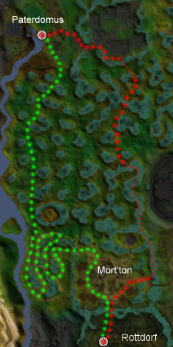
Verlasst die Stadt Canifis in westlicher Richtung und haltet euch dann Richtung Südwesten, bis ihr die Pilz-Parzelle erreicht. Dort seht ihr ein Tor, das ihr nur passieren könnt, wenn ihr das Abenteuer 'Der Geist der Natur' abgeschlossen oder zumindest angefangen habt.
Von diesem Zeitpunkt an solltet ihr eure Laufgeschwindigkeit auf 'Rennen' setzen und so schnell wie möglich zu der hölzernen Brücke im Süden laufen. Rennen ist deshalb von Vorteil, weil der Mort-Myre-Sumpf von Schrecks heimgesucht wird, die bekanntermaßen Nahrungsmittel verderben. Da ihr für eure Pilgerfahrt unbedingt Essen braucht, müsst ihr auf eure Vorräte gut achtgeben.
Aus den Tiefen des Sumpfes müsst ihr dann dem kurvenreichen Weg Richtung Mort'ton folgen und von dort aus nach Süden, Richtung Rottdorf, weitergehen.
Wenn ihr das Abenteuer 'Finsternis über Salbland' abgeschlossen habt, könnt ihr euch den Weg sparen und mit der Wanderung nach Rottdorf beginnen. So könnt ihr auf eurem Weg nach Süden gleich einen Abenteurer mitnehmen, bevor ihr einen Dorfbewohner in die Gegenrichtung eskortiert.
Voraussetzungen
Man muss keine bestimmten Fertigkeitsstufen vorweisen, aber folgende Abenteuer abgeschlossen haben:
Um die Wanderung nach Rottdorf zu beginnen, müsst ihr außerdem 'Finsternis über Salbland' abgeschlossen haben.
Empfohlene Ausrüstung
Wichtig: Bitte beachtet, dass ihr bei diesem Spiel sterben könnt, also bringt nur Gegenstände mit, auf die ihr verzichten könnt, falls ihr sie verlieren solltet.
Auf dem Weg zum Tempel werden euch überall gefährliche Gegner auflauern, daher solltet ihr gutes Rüstzeug tragen und euer Inventar bis zum Rand mit Essen füllen. Ein Tipp: Wenn ihr eurem Schützling vor dem Antritt der Reise zu Essen gebt, geht das um einiges leichter, als wenn ihr es auf dem Weg macht, während Schrecks und Vampire ihrerseits versuchen, euch zu essen.
Neben gutem Rüstzeug und Essen ist es außerdem empfehlenswert, die folgenden Gegenständen mitzunehmen:
![[Bild]](../../img/main/kbase/items/misc/burgh_rod.gif) ![[Bild]](../../img/main/kbase/items/quests/ivandis_flail.gif) |
Stab des Ivandis oder Flegel des Ivandis - damit kann man Vampire bekämpfen und zerstören |
| 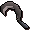 | Gesegnete, silberne Sichel - mit dieser vom 'Geist der Natur' gesegneten Sichel kann man seinen Druidenbeutel wieder auffüllen (siehe unten). |
![[Bild]](../../img/main/kbase/items/misc/druid_pouch.gif) |
Druidenbeutel - lebenswichtig im Kampf gegen Schrecks. Ein gefüllter Druidenbeutel lässt Schrecks sichtbar werden und macht sie dadurch angreifbar. Wenn euer Druidenbeutel leer ist, müsst ihr eine gesegnete, silberne Sichel benutzen, um mithilfe eines Blüh-Zaubers Erträge der Natur aufzusammeln. |
Schrecks sind im Mort-Myre-Sumpf weit verbreitet und suchen auch die speziellen Routen heim, denen ihr während der Pilgerfahrt und der Wanderung nach Rottdorf folgt. Ihr müsst daher unbedingt das Abenteuer 'Geist der Natur' abgeschlossen haben, damit ihr den Druidenbeutel benutzen könnt.
Natürlich sind auch Werkzeuge wie Hammer und Messer sehr nützlich auf eurer Wanderung, aber ihr könnt diese Gegenstände auch vor Ort finden, wenn ihr sie braucht.
Die Reise
Die Dorfbewohner
Ihr könnt auswählen, welchen der folgenden Dorfbewohner ihr zum Tempel eskortieren wollt:![[Bild]](../../img/main/kbase/minigames/temple_trek/rolayne_twicket.gif) |
Rolayne Twickit
Rolayne ist ein einsamer, alter Mann und ein ziemlich schwieriger Schützling, aber wenn ihr ihm helft, bekommt ihr die höchste Belohnung. Rolayne wird versuchen, sich selbst zu verteidigen, aber er ist kein starker Kämpfer. Ihr müsst also gut auf ihn aufpassen und müsst auf dem Weg zum Tempel zusammenbleiben. Es ist eine gute Idee, Nahrung mitzunehmen. Wenn Rolayne schwer verletzt wird, könnt ihr ihm durch das Essen einige Lebenspunkte zurückgeben. |
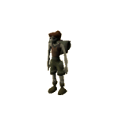 | Smiddi Ryak
Auch Smiddi ist schwer zu beschützen, weswegen sie euch die reichsten Belohnungen beschert. Sie kann keine Monster abwehren, aber sie wird sich bemühen, in eurer Nähe zu bleiben. Ihr müsst Nahrung mitnehmen, da sie nur eine niedrige Stufe in Lebenspunkte hat. Am besten legt ihr euch schon vor dem Antritt der Reise einen Plan zurecht. |
![[Bild]](../../img/main/kbase/minigames/temple_trek/jayene_kliyn.gif) |
Jayene Kliyn
Jayene ist mittelschwer zu beschützen. Für die Begleitung von dieser Dorfbewohnerin bekommt ihr folglich auch nur mittelgroße Belohnungen. Dafür ist sie recht kräftig und kann Schläge gut wegstecken. Außerdem wird sie sich selbst verteidigen und, so gut es geht, Monster in Ereignissen bekämpfen. Obwohl sie euch auf der leichten Route keine Probleme machen wird, solltet ihr vorsichtshalber etwas Nahrung dabei haben, für den Fall, dass sie schwer verletzt wird. |
![[Bild]](../../img/main/kbase/minigames/temple_trek/valantay_eppel.gif) |
Valantay Eppel
Valantay ist ebenfalls mittelschwer zu beschützen und liefert auch nur mittelgroße Belohnungen. Auch er ist einigermaßen stark, kann sich selbst verteidigen und Monster in Ereignissen bekämpfen. Auf der schwierigen Route werden euch etwas Nahrung und eine gute Rüstung helfen, euch selbst und Valantay zu verteidigen. |
| 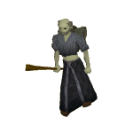 | Dalcian Fang
Dalcian ist ein einfacher Schützling, dafür werdet ihr für seine Begleitung auch nicht so reich belohnt. Er ist ein zäher Brocken und kann es mit anderen Monstern aufnehmen. Er wird bei Ereignissen anbieten, sich am Kampf zu beteiligen, und wird sich selber verteidigen, wo es nur geht. Trotzdem können euch die Riesenschnecken und Sumpf-Schlangen auf der schwierigeren Route immer noch Probleme bereiten. |
![[Bild]](../../img/main/kbase/minigames/temple_trek/fyiona_fray.gif) |
Fyiona Fray
Fyiona Fray ist ebenfalls ein einfacher Schützling, für deren Begleitung ihr auch nicht so reich belohnt werdet. Auch sie ist kräftig und kann es mit Monstern aufnehmen. Sie wird bei Ereignissen anbieten, sich am Kampf zu beteiligen, und wird sich größtenteils selber verteidigen. Trotzdem können euch die Riesenschnecken und Sumpf-Schlangen auf der schwierigeren Route immer noch Probleme bereiten. |
Die Abenteurer
Ihr könnt auswählen, welchen der folgenden Abenteurer ihr nach Rottdorf eskortieren wollt:![[Bild]](../../img/main/kbase/minigames/burgh_de_rott/forester.gif) |
Förster
Förster sind noch nie als große Helden in die Geschichten eingegangen. Daher überrascht es auch keinen, dass die Förster, die nach Rottdorf reisen wollen, für die Aufgabe nicht gerade überqualifiziert sind. Nahrung ist hier sehr hilfreich. Wenn der Förster schwer verletzt wird, könnt ihr ihm durch Essen einige Lebenspunkte zurückgeben. |
![[Bild]](../../img/main/kbase/minigames/burgh_de_rott/woman_at_arms.gif) |
Kriegerin
Diese Kriegerin befindet sich noch in der Ausbildung. In einigen Jahren kann sie sich vielleicht auf eigene Faust auf Expeditionen begeben oder sogar andere Abenteurer nach Rottdorf führen. In der Zwischenzeit ist es leider so, dass ihre Begeisterung ihr Können um einiges übersteigt. Ihr müsst Nahrung mitnehmen, da sie nur eine niedrige Stufe in Lebenspunkte hat. Am besten legt ihr euch schon vor dem Antritt der Reise einen Plan zurecht. |
![[Bild]](../../img/main/kbase/minigames/burgh_de_rott/apprentice.gif) |
Zauberlehrling
Der Zauberlehrling ist noch weit entfernt davon, ein großer Magier zu sein, und ist daher auf eure Hilfe angewiesen. Der Zauberlehrling ist mittelschwer zu beschützen. Obwohl er euch auf der leichten Route keine Probleme machen wird, solltet ihr vorsichtshalber etwas Nahrung dabei haben, für den Fall, dass er schwer verletzt wird. |
![[Bild]](../../img/main/kbase/minigames/burgh_de_rott/ranger.gif) |
Fernkämpfer
Die Fernkämpferin ist eine hartgesottene Kriegerin mit einiger Erfahrung. Leider hat sie auch einem Hang zu Heldentaten, die mehr als eine Nummer zu groß für sie sind. Auf der schwierigen Route werden euch etwas Nahrung und eine gute Rüstung helfen, euch selbst und die Fernkämpferin zu verteidigen. |
![[Bild]](../../img/main/kbase/minigames/burgh_de_rott/adventurer.gif) |
Abenteurer
Der Abenteurer ist ein einfacher Schützling, dafür werdet ihr für seine Begleitung auch nicht so reich belohnt. Er ist ein zäher Brocken und kann es mit den Monstern aufnehmen. Er wird bei Ereignissen anbieten, sich am Kampf zu beteiligen, und wird sich, so gut es geht, selber verteidigen. Trotzdem wird der Kampf gegen die Vampire und Nagelbestien auf der schwierigeren Route alles andere als ein Kinderspiel. |
![[Bild]](../../img/main/kbase/minigames/burgh_de_rott/mage.gif) |
Magierin
Die Magierin kann mächtige Zauber sprechen und setzt sich leidenschaftlich für die Rettung der Leute von Rottdorf ein. Sie könnte die Wanderung vermutlich auch alleine schaffen, also erwartet euch keine große Belohnung. Trotzdem wird der Kampf gegen die Vampire und Nagelbestien auf der schwierigeren Route alles andere als ein Kinderspiel. |
Die Routen zum Paterdomus / nach Rottdorf

| Route 1: Einfach | Diese Route ist die langsamste, aber dafür ist sie relativ ungefährlich, da sie im Zickzackkurs durch den Mort-Myre-Sumpf führt und einem oft die Gelegenheit gibt, Ereignissen aus dem Weg zu gehen. Wenn ihr auf diesem Weg in ein Ereignis verwickelt werdet, könnt ihr es abwenden, indem ihr das Ereignis vermeidet und die Pilgerfahrt fortsetzt. Diese Route ist speziell für niedrigstufige oder mittelstufige Spieler gedacht, deren Kampfstufe nicht so hoch ist. |
| Route 2: Mittelschwer | Diese Route ist gefährlicher. Sie führt am Ufer der Salve entlang hoch zum Paterdomus. Hier kann man den Ereignissen nicht mehr so gut aus dem Weg gehen, denn - da man immer den Fluss zu seiner Linken hat - stehen einem nicht so viele Fluchtwege zur Verfügung. Ihr müsst auf dieser Strecke daher 50 % der Gegner bezwungen haben, bevor ihr einem Ereignis ausweichen könnt (falls es insgesamt 5 Gegner waren, müsst ihr 3 getötet haben, bei 3 Gegnern müsst ihr 2 besiegt haben). Diese Route ist gut geeignet für mittelstufige Spieler mit relativ hoher Kampfstufe. |
| Route 3: Schwierig | Diese Route ist sehr gefährlich, denn dies ist der schnellste Weg zum Tempel - und die Monster wissen das. Einen schwachen Abenteurer sollte man auf keinen Fall mit auf diesen Weg nehmen. Hier locken einen die Gegner in den Hinterhalt und es ist unmöglich, ihnen auszuweichen. Ihr müsst alle Monster in diesem Gebiet besiegen und jedes Ereignis abschließen, um eure Pilgerfahrt fortsetzen zu können. Die einzige Alternative ist, davonzulaufen und die Pilgerfahrt abzubrechen. Wenn ihr die Flucht ergreift, bekommt ihr allerdings keinerlei Belohnungen für eure harte Arbeit. Diese Route ist daher für mittelstufige und hochstufige Spieler gedacht, die nach einer echten Herausforderung suchen. |
Während eines Ereignisses könnt ihr die Blätter rechtsklicken, die an verschiedenen Ecken des Schauplatzes liegen, und bekommt dann folgende Optionen angezeigt:
- Die Option Pilgerfahrt fortsetzen kann erst dann ausgewählt werden, wenn das Ereignis beendet wurde, das heißt, das Rätsel gelöst oder die Gegner besiegt wurden.
- Über die Option Fliehen kann man das Ereignis jederzeit abbrechen. Dadurch verliert man allerdings alle Belohnungen und kommt wieder in der entsprechenden Gegend in Morytania raus.
- Bei Klick auf Ereignis vermeiden kann man das Ereignis verlassen und die Pilgerfahrt fortsetzen. *
* Auf der einfachen Route ist das immer möglich, erhöht aber die Wahrscheinlichkeit, dass ihr wieder in ein Ereignis verwickelt werdet. Wenn ihr auf der mittelschweren Route seid, müsst ihr 50% der Ereignisse absolviert haben, um diese Option zu nutzen. Auf der schwierigen Route könnt ihr Ereignissen nicht ausweichen, ihr müsst sie entweder zu Ende spielen oder 'Fliehen' auswählen.
Wichtig: Ein Hindernis-Ereignis könnt ihr auf keiner Route vermeiden.
Kampf-Ereignisse

|
Schrecks Schrecks sind berühmt-berüchtigte Einwohner des Mort-Myre-Sumpfs. Ihr müsst alle Schrecks in dem Ereignis bezwingen, um es erfolgreich abschließen zu können. Dazu braucht ihr einen gefüllten Druidenbeutel, um sie sichtbar zu machen, denn erst dann könnt ihr sie töten. Wenn euer Druidenbeutel leer ist, ihr aber eine gesegnete, silberne Sichel habt, könnt ihr euren Beutel wieder füllen, indem ihr einen Blüh-Zauber auf ein paar Scheite sprecht. Wenn ihr den Schrecks unterlegen seid, müsst ihr aus dem Ereignis fliehen. |

|
Schatten Diese Ereignisse werden euch nur in Mort'ton passieren. Schatten sind zähe Gegner und teilen harte Schläge aus, wenn ihr nicht vorbereitet seid. Da sie alle auf euren Schützling losgehen werden, müsst ihr die Aufmerksamkeit der Schatten auf euch lenken, wenn euer Kamerad überleben soll.Gadderanks (der ehemalige Blutzoll-Eintreiber von Morytania, den ihr während 'Den Myreque zu Hilfe' besiegt habt) hatte eine Heidenangst vor Schatten und benutzte eine spezielle Waffe, die ihm einen Vorteil gegen die Biester verschafft hat. |

|
Jung-Vampire Wie ihr während des Abenteuers 'Den Myreque zu Hilfe' gelernt habt, muss man Vampire mit silbernen Waffen bekämpfen. Ihr solltet den Stab des Ivandis benutzen, um die Vampire halbtot zu schlagen. Dann könnt ihr die Vampire mithilfe des Spezialangriffs an einer Stelle halten. Wenn der Vampir gelähmt ist, benutzt schnell Guthix' Gleichgewicht. Das wird ihn entweder töten, heilen oder ärgerlicher und stärker als je zuvor machen. |

|
Riesenschlange Diese Kreaturen sind nicht zu unterschätzen! Wenn sie gemeinsam einen Angriff starten, können sie einem massiven Schaden zufügen. Es kann also ratsam sein, Ereignisse mit Riesenschlangen zu vermeiden (obwohl eure Belohnung dadurch geringer ausfallen wird). Wenn ihr eine Schlange erlegt habt, könnt ihr ihr mit einem Messer die Haut abziehen und aus der Haut das beliebte Schlangenleder-Rüstzeug herstellen. |
|
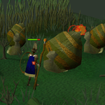
|
Riesenschnecke Diese Biester sind um einiges größer als durchschnittliche Schnecken und sehr mächtige Fernkämpfer. Ihr müsst hart kämpfen und schnell reagieren, wenn euer Abenteurer dieses Ereignis überleben soll. Mit den Schalen anderer Schnecken könnt ihr die Angriffe allerdings erstaunlich gut abwehren. Wie bei den Riesenschlangen gilt auch hier: Wer es wagt, sich mit den Riesenschnecken zu messen, riskiert zwar einiges, kann sich dafür aber auf eine ordentliche Belohnung freuen. |

|
Nagelbestien Nagelbestien sind massige, angriffslustige Kreaturen mit bösartigen Klauen und Zähnen, mit denen sie ihre Opfer aufschlitzen und beißen. Sie kauern in Verteidigungsposition bevor sie ihre fürchterlichen Attacken starten. Am besten greift man sie von Weitem an und sammelt dann die Nägel auf, die sie fallen lassen. Diese können nämlich für ein besonderes Heilmittel verwendet werden. |

|
Vampirgardist Falls Ihr das Abenteuer 'Seergazes Erbe' abgeschlossen habt, werden die Vampirgardisten den Mort-Myre-Sumpf patrouillieren, um alle diejenigen zu entmutigen, die das Haus Drakan bekämpfen wollen. Ihr könnt sie nur mit dem Flegel des Ivandis verletzen, der dadurch ein unerlässlicher Ausrüstungsgegenstand für jene wird, die eine Reise durch den Sumpf überleben möchten. Die Überreste der Vampirgardisten können im Kolumbarium des Paterdomus eingeäschert werden, so wie die Überreste der Vampirgardisten, die in Meiyerditch besiegt wurden. |

Hindernis-Ereignisse

|
Der Sumpf Wie der Name schon sagt, ist der Mort-Myre-Sumpf eine matschige Angelegenheit, also wundert euch nicht, wenn ihr an ein Sumpfloch kommt, das kaum zu überwinden scheint. Ihr müsst euch in der Nähe nach Hilfsmitteln umsehen, die euch beim Überqueren helfen. Wenn ihr Werkzeuge mit einer Klinge mitgebracht habt, dann benutzt sie mit einem nahe gelegenen dornigen Strauch.Ihr erhaltet dadurch drei dornige Stäbe. Wenn ihr diese mit einem Stück Sumpf benutzt, könnt ihr testen, ob der Grund fest genug ist, um ihn zu überqueren. Dabei kann es sein, dass euer Stab im Sumpf versinkt. Immer wenn ihr ein Stück Boden getestet und für sicher befunden habt, könnt ihr einen Schritt weitergehen. Dann müsst ihr diesen Vorgang einfach wiederholen, bis ihr den ganzen Weg über den Sumpf geschafft habt. |

|
Die Flussüberquerung Wenn ihr an einem Fluss angelangt seid, für den es keine Brücken oder ähnliches gibt, dann seht euch nach Grünzeug um, um das sich alte Legenden ranken. Dann werdet ihr die Sache schon schaukeln! |

|
Eine schreckliche Geburt Schrecks sind die verbitterten Geister derer, die im übel riechenden Mort-Myre-Sumpf verhungert sind. Manchmal werdet ihr Reisegruppen begegnen, die kurz vor dem Verhungern sind, und habt die Gelegenheit, sie von diesem schrecklichen Schicksal zu erlösen.Ihr solltet also nach Nahrung Ausschau halten und überlegen, wie ihr diese kochen könnt. Dann müsst ihr die armen Leute schnell mit dem Essen versorgen, bevor sie sich in Schrecks verwandeln. |

|
Die defekte Brücke Eine kaputte Brücke nutzt einem wenig, aber wenn euer Verstand so scharf wie eine Axt ist, seid ihr bestimmt nicht lange auf dem Holzweg.Unter Umständen fällt das Holz, das ihr braucht, ziemlich lebendig aus, in welchem Fall ihr einige untote Holzfäller bezwingen müsst. Dabei erhaltet ihr unter Umständen nützliche Holzfäller-Kleidung. |

|
Abidor Crank - der Gute Samariter Es gibt auch Ereignisse, die weder gefährlich noch beschwerlich sind. Ab und zu werdet ihr auf einen guten Samariter treffen, der durch die Sümpfe wandert, um euch seine Hilfe anzubieten. Er kann euch nicht nur heilen, sondern auch verdorbenes Essen (aus den Begegnungen mit Schrecks) in Eintopf verwandeln. |
Belohnungen
Wenn ihr den ganzen Weg von Rottdorf zum Tempel (oder zurück) bewältigt habt, wird euch euer Schützling eine Belohnungs-Marke überreichen.
Wichtig: Solltet ihr auf eurem Weg durch den Mort-Myre-Sumpf in kein einziges Ereignis verwickelt worden sein, erhaltet ihr nur eine relativ kleine Belohnung beim Einlösen der Marke. Dieses Entgelt kann dann unter Umständen kleiner ausfallen, als die unten angegebenen Werte.
Es gibt drei Arten von Belohnungs-Marken: blaue, gelbe und rote. Welche Farbe eure Marke hat, hängt davon ab, welchen Spielcharakter ihr beschützt und welche Route ihr ausgewählt habt und welche Ereignisse ihr gemeistert habt. Seid ihr auf der Pilgerfahrt, dann könnt ihr eure Marke auf der Bank in Rottdorf einlösen. Die Belohnungen von der Wanderung nach Rottdorf können bei Hiylik Myna am Paterdomus eingetauscht werden.
Ihr könnt die folgenden Gegenstände erhalten. Wie viele ihr davon bekommt, hängt von eurem Schützling, dem gewählten Weg und dem Verlauf eurer Reise ab. Wenn ihr auf besonders viele Ereignisse gestoßen seid, kann es sein, dass eure Belohnung außergewöhnlich hoch ausfällt.
| Gegenstand | Durchschnittliche Anzahl |
Außergewöhnliche Belohnung |
![[Bild]](../../img/main/kbase/items/ore/coal_1.gif) Kohle/Eisen |
5 - 102 | 145 |
![[Bild]](../../img/main/kbase/items/misc/bowstring.gif) Bogensehne |
9 - 169 | 241 |
![[Bild]](../../img/main/kbase/items/bars/silver_bar.gif) Silber-Barren |
6 - 107 | 152 |
![[Bild]](../../img/main/kbase/items/runes/pure_ess.gif) Reine Essenz |
27 - 468 | 666 |
| 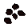 Wassermelonen-Samen |
1 - 16 | 26 |
![[Bild]](../../img/main/kbase/items/primary_ingredients/grimy_harralander.gif) Schmutzige Kräuter |
4 - 70 (Harralander, Frauenflachs oder Tarromin) |
100 |
![[Bild]](../../img/main/kbase/items/food/fish/lobster1.gif) Roher Hummer |
3 - 56 | 80 |
Zusätzlich zu den oben erwähnten Gegenständen kann es auch sein, dass ihr ein Buch des Lernens erhaltet. Wenn ihr darin lest, verleiht es euch Erfahrungspunkte in der Fertigkeit, um die es in dem Buch geht.
| Buch | Erfahrung |
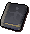![[Bild]](../../img/main/kbase/minigames/temple_trek/fire1.gif) ![[Bild]](../../img/main/kbase/minigames/temple_trek/fishing1.gif) ![[Bild]](../../img/main/kbase/minigames/temple_trek/mining1.gif) 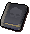 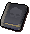![[Bild]](../../img/main/kbase/minigames/temple_trek/thieving1.gif) ![[Bild]](../../img/main/kbase/minigames/temple_trek/wc1.gif) Buch der Stufe 1 |
Zufällige Anzahl von Erfahrungspunkten (1100-1650) in einer der Fertigkeiten Gewandtheit, Feuermachen, Fischen, Bergbau, Berserker, Diebstahl oder Holzfällerei. |
![[Bild]](../../img/main/kbase/minigames/temple_trek/agility2.gif) 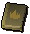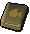 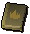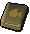![[Bild]](../../img/main/kbase/minigames/temple_trek/mining2.gif) ![[Bild]](../../img/main/kbase/minigames/temple_trek/slayer2.gif) ![[Bild]](../../img/main/kbase/minigames/temple_trek/thieving2.gif) ![[Bild]](../../img/main/kbase/minigames/temple_trek/wc2.gif) Buch der Stufe 2 |
Zufällige Anzahl von Erfahrungspunkten (2035-3025) in einer der Fertigkeiten Gewandtheit, Feuermachen, Fischen, Bergbau, Berserker, Diebstahl oder Holzfällerei. |
![[Bild]](../../img/main/kbase/minigames/temple_trek/agility3.gif) ![[Bild]](../../img/main/kbase/minigames/temple_trek/fire3.gif) ![[Bild]](../../img/main/kbase/minigames/temple_trek/fishing3.gif) ![[Bild]](../../img/main/kbase/minigames/temple_trek/mining3.gif) ![[Bild]](../../img/main/kbase/minigames/temple_trek/slayer3.gif) ![[Bild]](../../img/main/kbase/minigames/temple_trek/thieving3.gif) ![[Bild]](../../img/main/kbase/minigames/temple_trek/wc3.gif) Buch der Stufe 3 |
Zufällige Anzahl von Erfahrungspunkten (4015-5005) in einer der Fertigkeiten Gewandtheit, Feuermachen, Fischen, Bergbau, Berserker, Diebstahl oder Holzfällerei. |
Gute Reise!
Entwicklung
Entwicklung: Tytn H
Grafik: Joe R, Matt M, Paul B, Kavi M
Qualitätssicherung: Andy C, Kevin D
Audio: Ian T

Weitere Artikel in Minispiele
|
|
|
Weiterführende Informationen Wenn euch dieser Artikel nicht weitergeholfen hat, könnt ihr in den folgenden Kapiteln der RuneScape-Webseite mehr Informationen finden:
|
|